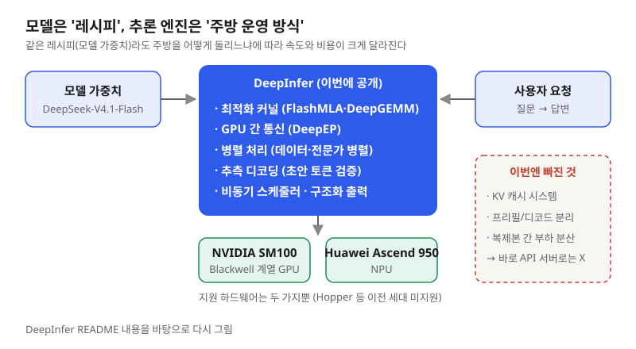
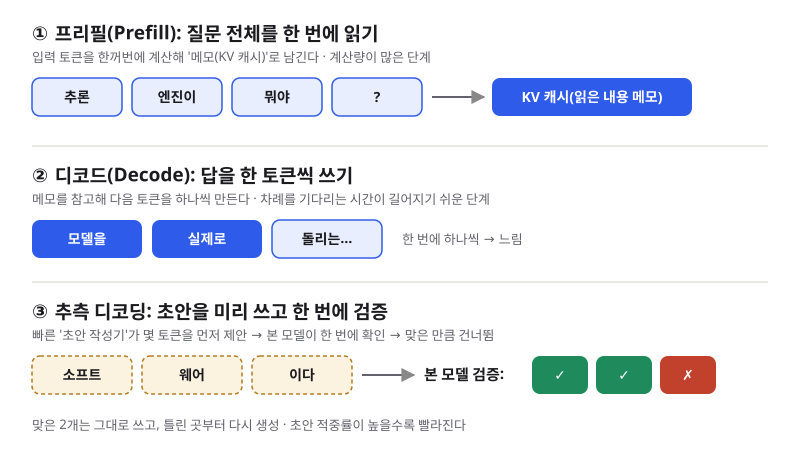

DeepSeek DeepInfer: 모델이 아니라 '모델을 돌리는 주방'을 통째로 공개하다
- 중국 DeepSeek이 자사 API를 실제로 돌리는 추론 엔진 DeepInfer를 Apache 2.0 라이선스로 공개했고, 하루 사이 Hacker News와 해외 기술 블로그에서 가장 많이 다뤄졌습니다.
- DeepInfer는 모델 자체가 아니라 모델을 빠르고 싸게 실행하는 소프트웨어로, 최적화 커널·병렬 처리·추측 디코딩 같은 기법을 한데 묶었고 NVIDIA SM100 GPU와 Huawei Ascend 950을 지원합니다.
- 당장 내 노트북에서 돌릴 물건은 아니지만, "AI 서비스 비용은 모델만큼이나 추론 엔진이 좌우한다"는 점을 배우기에 좋은 실전 교재입니다.
한국 시간 10월 20일 저녁, DeepSeek이 GitHub에 DeepInfer 저장소를 열자 하룻밤 사이 Hacker News 1위 토론(1,800점 이상), Medium·Substack·개인 기술 블로그의 해설 글이 줄줄이 올라왔습니다. 새 모델이 아니라 "모델을 돌리는 엔진"이 이렇게 큰 관심을 받은 이유는, 그동안 베일에 싸여 있던 DeepSeek의 저렴한 API 가격 비결 일부가 코드로 드러났기 때문입니다.
01한눈에 보기
AI 모델을 음식점에 비유해 보겠습니다. 모델 가중치(학습으로 얻은 수십억 개의 숫자)는 레시피이고, 추론 엔진은 그 레시피로 주문을 받아 음식을 내보내는 주방 운영 방식입니다. 같은 레시피라도 요리사를 어떻게 배치하고, 재료를 어떻게 미리 손질해 두고, 주문을 어떤 순서로 처리하느냐에 따라 한 시간에 내보내는 접시 수와 원가가 크게 달라집니다. DeepSeek은 지금까지 레시피(오픈 웨이트 모델)는 공개해 왔지만, 실제 주방 운영 노하우는 공개하지 않았습니다. 이번 DeepInfer 공개는 그 주방의 핵심 설비와 동선을 보여 준 셈입니다.

추론 엔진: 추론을 GPU 위에서 효율적으로 실행해 주는 소프트웨어. vLLM, SGLang, TensorRT-LLM이 대표적입니다.
커널(kernel): GPU에서 실제 계산을 수행하는 아주 작은 저수준 프로그램. 행렬 곱셈 같은 핵심 연산을 얼마나 잘 짜느냐가 속도를 좌우합니다.
오픈 웨이트 vs 오픈소스 엔진: 전자는 모델 숫자를 공개하는 것, 후자는 그 모델을 돌리는 코드를 공개하는 것입니다.
02어떻게 동작하나요
LLM이 질문 하나에 답하는 과정은 크게 두 단계입니다. 먼저 프리필(prefill) 단계에서 질문 전체를 한 번에 읽고, 읽은 내용을 KV 캐시라는 메모로 GPU 메모리에 남겨 둡니다. 이어서 디코드(decode) 단계에서 그 메모를 참고하며 답을 한 토큰(단어 조각)씩 만들어 냅니다. 프리필은 계산량이 많고, 디코드는 한 번에 하나씩 차례를 기다려야 해서 느려지기 쉽습니다.
DeepInfer의 README에 따르면 이 엔진은 두 단계를 빠르게 만들기 위해 다음 부품을 묶었습니다.
- 최적화 커널: DeepSeek이 앞서 따로 공개했던 FlashMLA(어텐션 계산), DeepGEMM(행렬 곱셈), DeepEP(GPU 간 통신) 등을 엔진 안에 통합했습니다.
- 병렬 처리: 어텐션은 데이터 병렬로, MoE(전문가 혼합, 질문마다 일부 '전문가' 신경망만 쓰는 구조) 부분은 전문가 병렬로 여러 GPU에 나눠 싣고, 전문가별 부하를 고르게 맞춥니다.
- 추측 디코딩: 빠른 초안 작성기가 몇 토큰을 먼저 제안하면 본 모델이 한 번에 검증해, 맞은 만큼 건너뛰는 방식입니다. README는 이를 DSpark와 신뢰도 기반 검증이라고 부릅니다.
- 비동기 스케줄링: CPU가 다음 묶음(배치)을 준비하는 동안 GPU는 쉬지 않고 계산하도록 겹쳐 돌립니다. 기본으로 켜져 있습니다.
- 구조화 출력: 답이 정규식, JSON 스키마, EBNF 문법을 반드시 따르도록 생성을 제한합니다. 앱에서 JSON을 받아 쓰는 개발자에게 특히 유용한 기능입니다.
- 배치 불변·결정적 추론(NVIDIA 전용): 같은 입력이면 함께 처리되는 다른 요청과 상관없이 같은 결과가 나오도록 맞춥니다. 디버깅과 평가 재현에 도움이 됩니다.

03왜 지금 화제인가요
CellCog 블로그에 따르면 DeepSeek은 10월 20일 18:30(KST)쯤 X(옛 트위터)로 공개를 알렸고, The New Stack은 이날 함께 API 요청을 모델 입력으로 바꿔 주는 보조 라이브러리 deepseek-recipe의 새 버전도 나왔다고 전했습니다. 커뮤니티가 크게 반응한 지점은 세 가지였습니다. 첫째, 실제 상용 서비스에 쓰는 엔진이라는 점. 둘째, NVIDIA와 나란히 Huawei Ascend 950을 1급 지원 대상으로 올렸다는 점. 셋째, 함께 언급된 운영 수치(한 클러스터에서 하루 155조 토큰 처리 등)가 "AI 추론은 돈이 되는가"라는 오래된 논쟁에 불을 붙였다는 점입니다.
04관련 나라·기업
| 구분 | 이름 | 어떤 관련이 있나 |
|---|---|---|
| 나라 | 중국 | DeepSeek과 Huawei의 본거지. 자국 칩(Ascend)을 엔진의 정식 지원 대상으로 올린 점이 주목받았습니다. |
| 나라 | 미국 | 엔진이 지원하는 NVIDIA GPU의 나라. 공개 즈음 미국 연방 민간기관에서 DeepSeek 기술을 퇴출하라는 명령이 보도돼 HN에서도 함께 논의됐습니다. |
| 기업 | DeepSeek | DeepInfer와 deepseek-recipe를 만들고 공개한 주체. 지원 모델은 자사 DeepSeek-V4.1-Flash입니다. |
| 기업 | NVIDIA | 지원 하드웨어인 SM100 아키텍처(Blackwell 계열 데이터센터 GPU)의 제조사. 배치 불변·결정적 샘플링은 NVIDIA에서만 됩니다. |
| 기업 | Huawei | 또 하나의 지원 하드웨어인 Ascend 950 NPU의 제조사. |
05기존 방식과 무엇이 다른가
README는 DeepInfer가 처음에 주로 vLLM을 바탕으로 만들어졌고 SGLang·TensorRT-LLM에서 영감을 받았다고 밝힙니다. 즉 '전혀 새로운 엔진'이라기보다 범용 엔진을 한 모델과 두 하드웨어에 맞춰 극한까지 다듬은 버전에 가깝습니다.
| 비교 항목 | 범용 엔진 (vLLM·SGLang 등) | DeepInfer |
|---|---|---|
| 지원 모델 | 수백 종의 오픈 모델 | DeepSeek-V4.1-Flash 하나 |
| 지원 하드웨어 | 여러 세대 GPU, 일부는 CPU·기타 가속기 | NVIDIA SM100, Huawei Ascend 950 |
| 목표 규모 | GPU 1장부터 클러스터까지 | 여러 GPU로 묶인 대규모 배포 (벤치마크: 프리필 4장, 디코드 64장) |
| 서빙 기능 | OpenAI 호환 API 서버 등 바로 쓸 수 있는 구성 | 오프라인 추론 중심. KV 캐시 시스템·프리필/디코드 분리·부하 분산은 미포함 |
| 성격 | 누구나 쓰는 범용 도구 | 실제 상용 서비스의 '참고 구현' |
| 라이선스 | Apache 2.0 (vLLM 기준) | Apache 2.0 |
06직접 해 보기
솔직히 말해 DeepInfer는 Blackwell급 GPU 여러 장이 필요해서 개인이 바로 돌려 보기는 어렵습니다. README가 밝힌 준비물은 Linux, GCC 13 이상, Python 3.12, CUDA 13(NVIDIA) 또는 CANN 9.2(Ascend)입니다. 그래도 하드웨어가 있는 환경이라면 README에 나온 순서는 아래처럼 간단합니다. 빈 Python 3.12 가상 환경을 만들어 활성화한 뒤 진행하라고 안내합니다.
# 저장소 받기
git clone https://github.com/deepseek-ai/DeepInfer
cd DeepInfer
# Ascend 환경이면 nvidia 대신 ascend
# DeepInfer를 실행하는 셸에서도 계속 export 상태로 둘 것
export DEEPINFER_ACCELERATOR=nvidia
./build.sh
# 오프라인 추론 예제 실행 (첫 실행 때 기본 체크포인트를 Hugging Face 캐시로 내려받음)
python examples/offline_inference.py모델 파일을 이미 갖고 있다면 DEEPINFER_HF_MODEL_DIR=/path/to/DeepSeek-V4.1-Flash-1017로 위치를 지정할 수 있습니다. GPU가 없는 입문 개발자라면 이렇게 해 보길 권합니다.
1. README의 기능 목록을 용어 사전처럼 읽기
프리필, 디코드, 전문가 병렬, 추측 디코딩, 구조화 출력이 실제 서비스에서 어떻게 쓰이는지 한눈에 볼 수 있는 요약본입니다.
2. 구조화 출력 예제 코드 열어 보기
저장소의 examples/_structured_output.py를 보면 JSON 스키마로 답 형식을 강제하는 방법을 알 수 있습니다. 같은 개념은 다른 엔진·API에서도 쓰입니다.
3. 가지고 있는 범용 엔진과 비교하기
이미 vLLM 같은 엔진을 써 봤다면, 같은 기능(추측 디코딩·구조화 출력)이 어떤 옵션으로 켜지는지 나란히 비교해 보세요.
07주의할 점과 한계
- 하드웨어 장벽: NVIDIA SM100과 Huawei Ascend 950만 지원합니다. The New Stack에 따르면 Hopper(H100 등) 같은 이전 세대는 지원하지 않습니다.
- 완성된 서버가 아님: KV 캐시 시스템, 프리필/디코드 분리, 데이터 병렬 복제본 간 부하 분산이 빠져 있어 그대로 API 서비스를 띄울 수는 없습니다.
- 모델 하나만 지원: 현재는 DeepSeek-V4.1-Flash 전용입니다.
- 수치는 자체 발표: AI타임스 보도에 따르면 디코드 처리량은 GPU당 초당 2만5천 토큰 이상이라고 하지만 DeepSeek 자체 측정입니다. AgentsPulse는 이 디코드 수치가 초안 적중률 75%를 가정한 값이라고 짚었습니다. 하루 155조 토큰이라는 수치도 캐시에서 재사용한 입력 토큰을 포함한 것이라고 Latent.Space는 설명합니다.
- 규제 이슈: 미국 연방 민간기관의 DeepSeek 기술 사용 금지 보도처럼, 회사·기관에 따라 DeepSeek 관련 소프트웨어 도입에 정책 검토가 필요할 수 있습니다. 코드는 Apache 2.0이지만 쓰려는 조직의 규정을 먼저 확인하세요.
08정리
DeepInfer는 "어떤 모델을 쓰느냐"만큼 "그 모델을 어떻게 돌리느냐"가 AI 서비스의 속도와 비용을 결정한다는 사실을 보여 준 사례입니다. 같은 레시피로도 주방 운영에 따라 접시당 원가가 달라지듯, 커널 최적화·병렬 처리·추측 디코딩이 쌓여 DeepSeek의 낮은 API 가격을 떠받치고 있다는 점이 코드로 확인됐습니다.
입문 개발자에게 지금 필요한 것은 이 엔진을 직접 돌리는 일이 아니라, 프리필·디코드·KV 캐시·추측 디코딩 같은 개념을 익혀 두는 일입니다. 나중에 vLLM으로 작은 모델을 서빙하거나 API 비용을 줄일 방법을 고민할 때, 오늘 본 주방 설계도가 좋은 지도가 되어 줄 것입니다.
09참고한 글
- deepseek-ai/DeepInfer (README) GitHub · 공식 저장소 · 2026.10.20
- DeepSeek just open-sourced its inference engine Hacker News · 2026.10.21
- What is DeepSeek DeepInfer? The Inference Engine Behind Its Production AI Systems Medium · Mehul Gupta · 2026.10.20
- Reflections on DeepSeek Open-Sourcing Its Inference Engine, DeepInfer Substack · WK · 2026.10.20
- DeepInfer Explained: DeepSeek's Open Inference Engine, Benchmarks, Specs, and Costs Kingy AI · 2026.10.20
- DeepSeek DeepInfer: What the Open-Source Engine Actually Ships AIReiter · 2026.10.21(KST)
- DeepSeek Open-Sources DeepInfer: What It Takes to Run CellCog 블로그 · 2026.10.20
- DeepSeek DeepInfer: Open Engine, 155T Tokens/Day Claim explainx 블로그 · 2026.10.20
- DeepInfer: DeepSeek's Open Inference Engine AgentsPulse · 2026.10.20
- [AINews] DeepSeek DeepInfer: Open Source SOTA Inference Latent.Space · 2026.10.21
- DeepSeek open-sources the inference engine behind its API The New Stack · 2026.10.20
- 딥시크, AI 운영 비용 낮출 핵심 추론 기술 '딥인퍼' 오픈소스 공개 AI타임스 · 2026.10.21